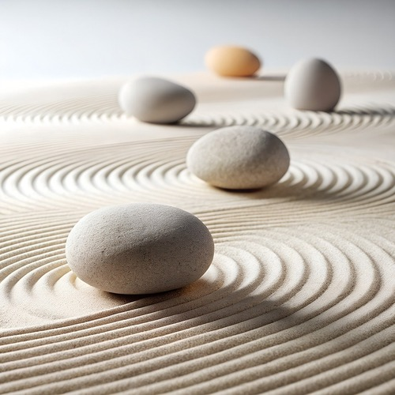
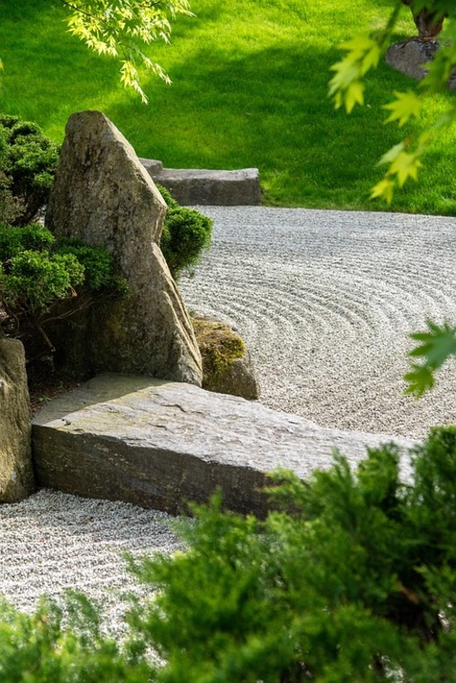
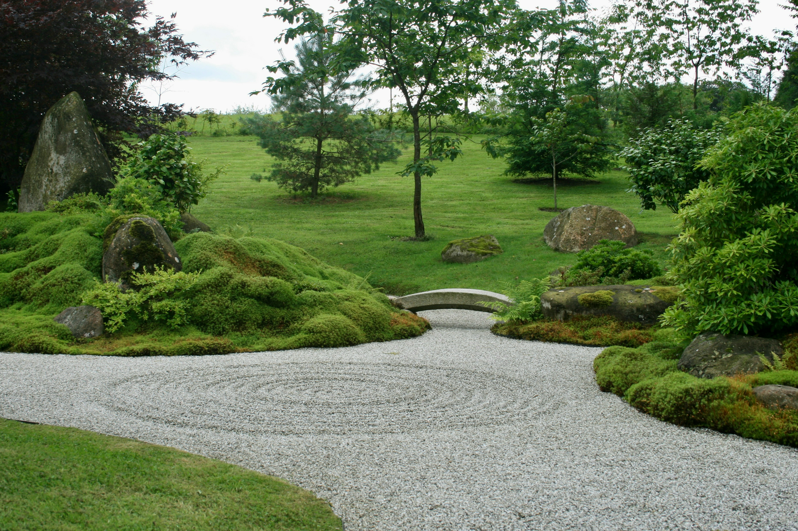

Key Elements of a Zen Garden

Gravel or Sand
Raked into patterns that resemble rippling water or waves. The act of raking itself is meditative and promotes focus and calm.
Raked into patterns that resemble rippling water or waves. The act of raking itself is meditative and promotes focus and calm.

Rocks
Symbolize islands, mountains, or animals. Often arranged in groups, with attention to balance and asymmetry.
Symbolize islands, mountains, or animals. Often arranged in groups, with attention to balance and asymmetry.

Moss
Sometimes used to add softness and contrast. Represents age and natural growth.
Sometimes used to add softness and contrast. Represents age and natural growth.

Minimalism
Zen gardens avoid clutter. The emptiness is just as important as the elements within it.
Zen gardens avoid clutter. The emptiness is just as important as the elements within it.